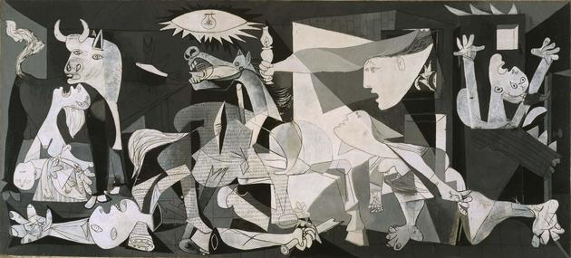

Guernica es un famoso cuadro de Pablo Picasso pintado entre los meses de Mayo y Junio de 1937, cuyo titulo alude al bombardeo de Guernica ocurrido el 26 de Abril de dicho año (1937) durante la guerra civil española por parte del ejercito nazi. Fue realizado por encargo del director general de bellas artes, Josep Renau a petición del Gobierno de la Segunda República Española tras ser expuesto en el pabellón español durante la Exposición Internacional del 1937 en París, con el fin de atraer la atención del público hacia la causa republicana en plena guerra civil española.
